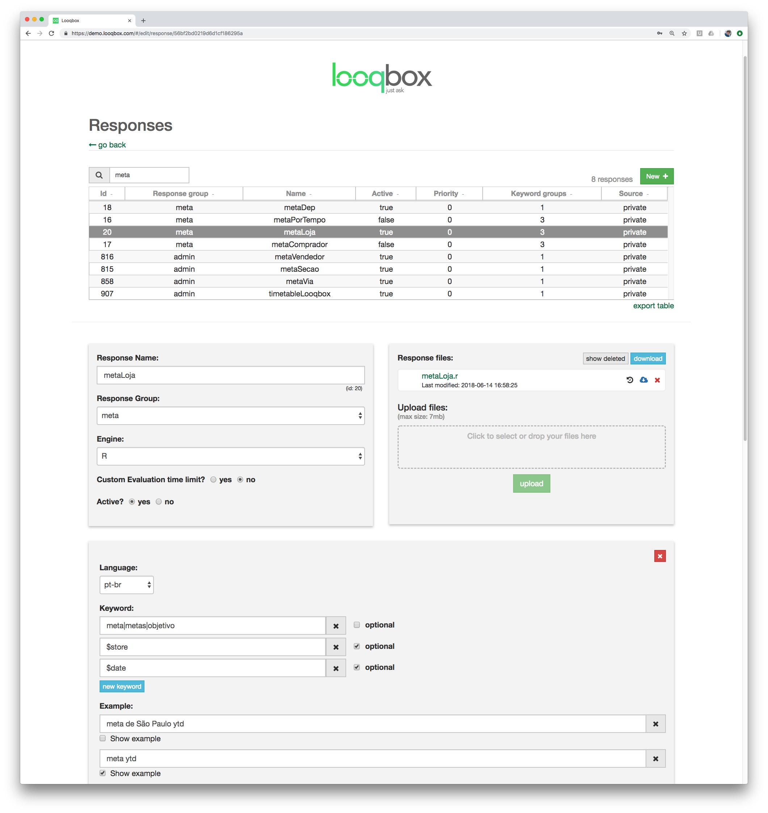

Implementation
- Implementation Flow
- Setting up a connection
- Creating a response
- Creating User, UserGroup and ResponseGroup
- Entity By Code and Entity By Name
- Replacements
Implementation Flow
There are 2 important concepts that you should know to understand our recommentation about how responses should be implemented in Looqbox.
-
Looqbox runs a R script for each question asked by the users. Each of those scripts access a datasource (e.g. MySQL), so the time that a users waits is mainly the response time from the query or API. The maximum recommended time for a response is 2 seconds.
-
Users usually need a bit of experience with the interface to start asking more complex questions, so starting with short and general questions help new users to navigate.
We discorage the implementation of complex dashboards in Looqbox, since it usually depends of multiple queries, which result in a long response time.
To guarantee the best user experience, responses should be implemented in a way that users can ask simple questions, and navigate to more specific information using features like drill down. Navigating between 4 tables of content waiting 2 seconds for each load in much better than waiting 8 seconds for a single dashboard.
Here is a sequence of questions to illustrate this scenario:
- sales $date
- sales $date by store
- sales $date by department
- sales $date by supplier
Setting up a connection
Creating a response
Here you can link keywords to a script. We will divide this section 3 parts.
Basic info
Response Name: use a name to find this response easily later
Response Group: each response must belong to a response group, used to control who can access this resource
Engine: R (default) is the only engine available for scripts
Custom evaluation time limit: ATTENTION. Don't modify unless it's extremely necessary. This field is used to modify the default timeout (30s) for a script to respond. Good scripts run under 2 seconds, so there should be really no reason to modify this value
Active: (self explanatory)
Response files
Response files: Use this area to upload scripts or help files. The main file will/must always have the same name as the responseName. IMPORTANT: .r extension MUST be lowercase
Keyword Group
Language: language that will use this keyword group
Keyword: IMPORTANT. Here you can define which keywords must be present in a sentence to run this response. The script that will be executed will always be chosen by the highest number of entities found inside a question that in linked to a response. Keywords can be divided in 2 groups:
- simple words: usually stem or a verb in infitive. E.g. for a report about sales, use as keyword "sales", and all variations such as "sell", "sold", "selling" can be registered under Replacements.
- entities: starts with "$", and represent a pattern that can be found in the question. The most used entity is "$date", which is preimplemented by Looqbox. You can create your own entities (see EntityByCode and EntityByName)
A list of synonyms can be used by separating words with pipes. E.g.: sales|revenue
Note that keywords can be optional. This is useful for entites that may appear in a question, but is not fundamental for the main usage case for a response. To illustrate:
Imagine that it's important for a user to ask about sales "sales yesterday" (which returns a table with the sales in each store), but it's also common to modify the answer by asking "sales yesterday store 1, 2 and 3" (which returns a table with the sales of store 1, 2 and 3). In this case, the entity $store is optional, and when available, all values about store (in our example, 1 to 3) will be fowarded to the script within the entity $store.
